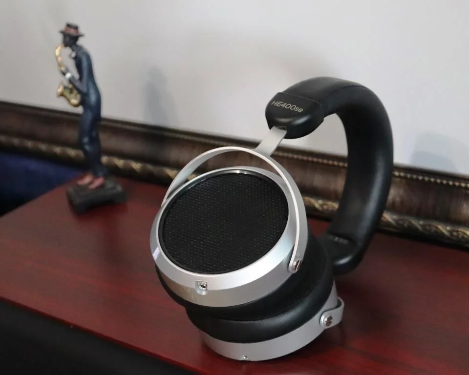

Обзор №1
Краткое описание обзора №1. Узнайте все о лучших наушниках для аудиофилов.
Новость №1
Обновленная прошивка гитарного процессора Fender Tone Master Pro 1.4.
Новость №1
Обновленная прошивка гитарного процессора Fender Tone Master Pro 1.4.
Новость №1
Обновленная прошивка гитарного процессора Fender Tone Master Pro 1.4.
Новость №1
Обновленная прошивка гитарного процессора Fender Tone Master Pro 1.4.
Новость №1
Краткое описание новости №1. События, важные детали и влияние на мир аудиофилов.
Новость №2
Краткое описание новости №2. Узнайте о последних разработках в мире акустики и технологий.
Новость №3
Краткое описание новости №3. Как музыка и новые технологии изменяют мир вокруг нас.
Новость №4
Краткое описание новости №4. Открытия в области наушников и технологий для улучшения качества звука.